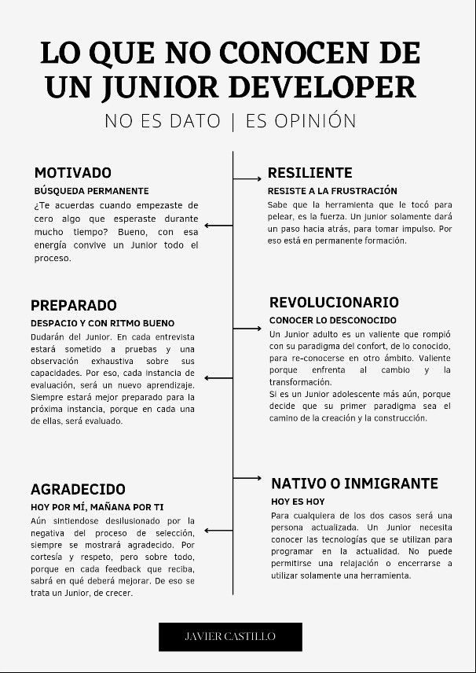

Yo creo que si. Serás Junior en un nuevo lenguaje, o herramienta, que no tengas experiencia. Pero puedes tener experiencia suficiente como para dominarla en un corto tiempo.
¿Se puede ser Junior, después de ser Senior?
También y más con la vorágine que se vive la digitalización actual. Por eso, el punto de ser (o volver a ser) Junior, es sinónimo de evolución.
